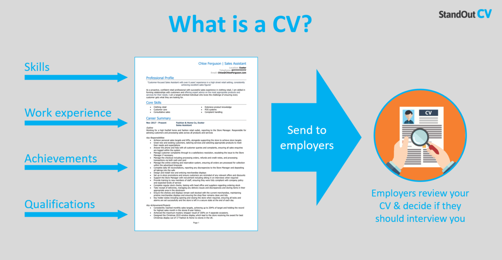

Curriculum vitae
The average person changes jobs 12 times throughout the course of their lifetime. That means they create at least 12 different versions of their CV during that time.
The purpose of you CV is to win job interviews.
In 1482, Leonardo da Vinci invented the CV. He listed all his abilities and send it to the Duke of Milan.
The best thing?
His approach was spot-on. He could have highlighted all his impressive projects from the past.
But he didn’t.
He could have provided a list of all the artillery he already made.
But he didn’t.
No, Da Vinci realized that those were all HIS achievements and not the Duke’s NEEDS.
He placed himself in the Duke’s position and figured out what he could offer to improve HIS situation.
And it worked.
Your CV is NOT a biography anymore!
The purpose of your CV is NOT to get the job… It is to arrange an interview!
The main objective of your CV is to communicate to the recruiter that this particular job is the logical result of your career path.
Your CV has to evoke the desire to meet you!
In other words...
Your CV is NOT the place to demonstrate what YOU are looking for.
It is to show why you are the perfect candidate.
There is plenty of time to talk about yourself in the job interview.
Every CV is to be written in a defined format.
To make the CV more appealing and informative, you must know the format and different sections that are included.
- HEADER
-
This is the top most section of your CV. The employer is often looking for your identity and the ways to contact you here. Always use a bolder font for your name so that it stands out, and makes it easier to be remembered.
- OBJECTIVE
-
In this section, you need to write the objective that you are seeking to achieve. Always match this objective with the the company’s objective.
- EDUCATION
-
In this section, the employer is looking for the education that you have relieved. Just keep it as simple as possible.
- EXPERIENCE
-
Here comes the tricky part. For most freshers, this section is often left blank, and this is the biggest issue that the recruiter faces. Develop a sense of trust in your employer by letting him know, that this isn’t your first real world job experience (even if it is) with the help of mentioning your college projects, live assignments or any other achievement.
- SKILLS
-
Another extremely important section. For this, step into the employer’s boots for a while. Think what are the skills that he would be looking for. Match those skills with the ones mentioned in the job description.
How to choose a proper format
|
Good CV format |
Bad CV format |
|---|---|
|
Clearly defined sections. Bold headings. |
Unclear layout. Difficult to navigate. |
|
Simple font and colour scheme. |
Elaborate font and loud colours. |
|
Text broken up and plenty of bullet points. No images or distracting design features. |
Large unbroken paragraphs of text. Large photograph wasting space. |
Don't forget about your CV profile (sometimes called a personal statement).
It is a short introductory paragraph at the top of your CV, and is the first thing that a recruiter will see upon opening your CV.
So, it needs to excite people and encourage them to continue reading the rest of your CV.
https://www.prospects.ac.uk/careers-advice/cvs-and-cover-letters/how-to-write-a-cv